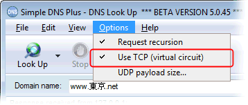
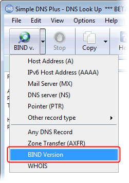
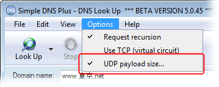
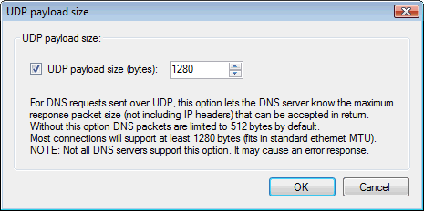
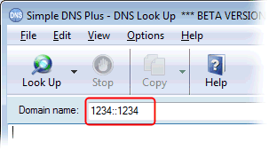
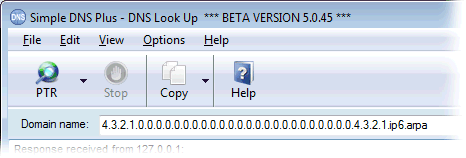

---
title: New in Simple DNS Plus v. 5.0 - DNS Look Up module
category: 17
frontpage: false
comments: true
refs: 95
created-utc: 2019-01-01
modified-utc: 2019-01-01
---
DNS requests over TCP (virtual circuit)
Most DNS requests, other than zone transfers, are sent over UDP. However in some situations it can beneficial to test if a DNS server also responds via TCP (which it should). This is also know as VC or "virtual circuit" in the classic NSLOOKUP command line tool:

BIND version requests
It is now possible to do special lookups for the version number of BIND DNS servers (and others):

UDP payload size
It is now possible to specify the maximum response packet size for UDP requests (an "EDNS0" option).
This can be useful for testing certain requests which return large response messages.
For example, IPv6 records were recently added for the Internet .com and .net top level names, making the full referral message for these domains larger than the standard 512 DNS message size.


Automatic reverse IPv6 lookup
When you enter an IPv6 address in the domain name field and click the Look Up button:

This is automatically converted to a reverse IPv6 lookup:
